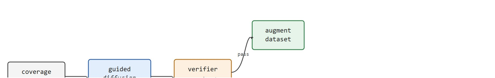
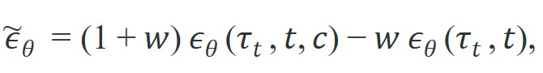
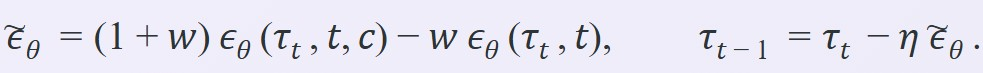

Generate the whole future as one object, then bend it toward high reward with a guidance gradient; the plan and the optimizer become the same forward pass.
A Trajectory-Level Planner
This section assumes familiarity with domain randomization and synthetic data pipelines from section 13.2, and with offline RL dataset construction from section 25.3. The guidance-weight trade-off introduced here is the central concern of section 41.5, which covers the risks of generated experience in detail. The scene-coverage ideas also recur in Part IX alongside active data collection and curiosity-driven exploration.
A robot that has seen ten thousand real kitchens still fails in the eleven-thousandth. Collecting physical experience at scale is slow, expensive, and dangerous. Generative scene synthesis breaks that bottleneck: a diffusion model conditioned on a task description can produce photorealistic environments, diverse object arrangements, and plausible contact trajectories on demand. Right now, teams are training manipulation policies entirely on synthetic episodes, then deploying on real hardware with minimal fine-tuning. By the end of this section you will understand how guided diffusion generates that synthetic data, why the guidance weight is the critical knob, and how a feasibility filter keeps generated scenes from lying to the policy.
Ask a diffusion model to imagine ten thousand kitchens it has never touched, keep only the ones a real arm could survive, and you have replaced six months of robot teleoperation with an overnight GPU run. That is the bargain this section unpacks, and it starts from one observation: a generative planner is really just a sampler. Diffuser (Janner et al., 2022) generates a full trajectory at once by diffusion, then steers that generation toward high reward with classifier guidance (a separately trained reward or value model whose gradient nudges each denoising step toward higher-reward trajectories), so planning and optimizing collapse into the same denoising forward pass. Decision Diffuser instead conditions on a desired return-to-go (RTG, the sum of future rewards from the current timestep) for offline reinforcement learning. It samples trajectories that the dataset suggests will achieve that return. The same generative machinery also produces candidate futures and synthetic scenes that planners and learners can consume, as Figure 41.4A illustrates: a scene diffusion model conditioned on a task and an initial pose synthesizes environments and contact configurations whose resulting episodes augment the training set.
The catch is shared across all of these uses: generated trajectories and scenes help only when they stay near the real control regime, and the guidance that makes them high-reward can also pull them off the data manifold (the thin region of state-action space that real, physically valid trajectories actually occupy). The right framing is generation as a proposal engine whose proposals must survive a feasibility check, whether the proposal is a planned trajectory or a synthetic training scene.

Think of the data manifold like a river channel carved by real water. Strong guidance is like a current you add artificially: it can steer a leaf toward a destination, but if you pump too hard the leaf gets pushed up onto the dry bank, completely outside the channel the river can actually reach. A trajectory steered by a large guidance weight does the same thing: it arrives at the goal in parameter space while sitting on dry land, in a configuration no real joint can hold, no real surface can support. The useful operating range is the middle of the river, where the added current still moves the leaf toward the goal but keeps it wet.
A model earns its place only when it improves action. In Generating Scenes And Synthetic Experience, the reader should keep asking which decision changes, which uncertainty is exposed, and which failure mode becomes easier to diagnose.
Diffuser denoises an entire trajectory $\tau$ and biases sampling toward high reward using classifier guidance or classifier-free guidance (a variant that trains one network for both conditional and unconditional predictions, eliminating the need for a separate classifier). At each reverse step the unconditional noise prediction is combined with a conditional one to form a guided estimate

where $c$ is the conditioning (a goal or a high-return signal) and $w$ is the guidance weight. With $w=0$ the sample is unconditional; larger $w$ pushes harder toward the conditioned objective. The trade-off is direct: strong guidance shapes more goal-directed plans but can drag samples off the data manifold into dynamically infeasible trajectories, which is why a feasibility filter still sits downstream. Decision Diffuser uses this same conditioning mechanism with the return-to-go as $c$, turning offline reinforcement learning into conditional trajectory generation.
Before leaning on that dial in a real loop, it is worth counting what each guided sample costs. A practical cost note frames the rest of the chapter: generative planning pays 20 to 50 denoising steps at inference for every plan, against a single forward pass for a deterministic policy. That latency is the price of multimodality and guidance, and it is exactly what the speedup work in Section 41.5 attacks.
So far: guidance weight $w$ steers a denoised trajectory toward a goal or return signal, Decision Diffuser reuses that same mechanism with return-to-go as the condition, and every guided sample costs 20 to 50 denoising steps versus one pass for a deterministic policy; next, this same guidance dial gets repurposed to generate training data rather than a single plan.
The same guidance dial that steers a single plan becomes a data-generation lever once trajectories are banked instead of consumed one at a time. When generated trajectories are reused as training data, the loss mixes real trajectories $\mathcal{D}_r$ with generated ones $\mathcal{D}_g$: $\mathcal{L}(\theta)=\mathbb{E}_{\mathcal{D}_r}[\ell_\theta] + \alpha\,\mathbb{E}_{\mathcal{D}_g}[\ell_\theta]$. The hard part is not forming that mixture. The hard part is ensuring $\mathcal{D}_g$ covers task-relevant but underrepresented states instead of injecting trajectories that violate real embodiment dynamics. Too much synthetic data pushes the policy toward configurations that never appear on actual joints, surfaces, or sensors. That shift causes silent degradation at deployment. To tune $\alpha$, hold out a hardware evaluation set and train policies at several values of $\alpha$ on the same real-plus-synthetic mix. Select the value that minimizes the transfer gap. Monitor the verifier rejection rate at the same time: a low transfer gap achieved by discarding most synthetic proposals provides no coverage benefit.
Input: real dataset $\mathcal{D}_r$, scene diffusion model $p_\theta$, guidance weight $w$, mixture weight $\alpha$, verifier $V$, target coverage region $\mathcal{R}$, denoising steps $T$
Output: augmented training dataset $\mathcal{D}_r \cup \mathcal{D}_g^*$, policy parameters $\theta^*$

Classifier-free guidance trains one network to produce both conditional and unconditional noise predictions (by randomly dropping the condition during training), then combines them at sampling time with weight $w$. No separate classifier is needed, and $w$ becomes a single inference-time dial that trades goal adherence against on-manifold realism.
Reading the mechanism above answers how guidance shapes a single plan, but this section's title promises scene and dataset-level generation, not just trajectory denoising. The rest of the section builds toward that promise directly: the worked example below isolates the guidance-weight trade-off on a single endpoint, the Practical Recipe then scales the same guided-generation loop to full scenes conditioned on real-data coverage gaps, and the algorithm box further above specifies exactly how accepted scene proposals get folded into a training mixture with the real dataset. Each step is a prerequisite for the next: understand the guidance dial on one trajectory before trusting it to fabricate whole scenes, and understand feasibility filtering before trusting the mixture weight $\alpha$.
The probe below isolates the guidance-weight trade-off Diffuser depends on. From one noisy start it runs a guided denoising loop at three values of $w$, blending a conditional denoiser (pulls the endpoint to the goal) with an unconditional one (pulls toward an on-manifold prior), and reports the endpoint, its distance to the goal, and whether it stays inside a feasible reach radius.
# Guided trajectory denoising (Diffuser-style).
# eps_tilde = (1 + w) eps_cond - w eps_uncond ; w trades goal-pull vs on-manifold pull.
import numpy as np
H = 5
goal = np.array([1.0, 0.0])
feasible_radius = 1.15 # endpoints beyond this are dynamically infeasible
def eps_uncond(tau): # stand-in: pull toward a smooth on-manifold prior
prior = np.stack([np.linspace(0.0, 0.6, H), np.zeros(H)], axis=1)
return tau - prior
def eps_cond(tau, c): # stand-in: pull the trajectory toward the goal c
target = np.stack([np.linspace(0.0, c[0], H), np.linspace(0.0, c[1], H)], axis=1)
return tau - target
for w in [0.0, 1.0, 4.0]:
rng = np.random.default_rng(4) # same start for every w
tau = rng.normal(size=(H, 2)) * 0.3
for _ in range(8): # guided reverse steps
eps_tilde = (1 + w) * eps_cond(tau, goal) - w * eps_uncond(tau)
tau = tau - 0.2 * eps_tilde
endpoint = tau[-1]
dist = float(np.linalg.norm(endpoint - goal))
feasible = float(np.linalg.norm(endpoint)) <= feasible_radius
print(f"w={w:>3}: endpoint={endpoint.round(3).tolist()} "
f"dist_to_goal={dist:.3f} feasible={feasible}")w=0.0: endpoint=[0.751, 0.012] dist_to_goal=0.249 feasible=True
w=1.0: endpoint=[1.084, 0.012] dist_to_goal=0.085 feasible=True
w=4.0: endpoint=[2.083, 0.012] dist_to_goal=1.083 feasible=FalseTrace the guided update on the trajectory endpoint alone, starting at $\tau=[0.30,\,0.05]$ with goal $c=[1.0,\,0.0]$, on-manifold prior endpoint $[0.60,\,0.0]$, step $\eta=0.2$, and weight $w=1$. The guided noise is $\tilde\epsilon = (1{+}w)(\tau - c) - w(\tau - \text{prior})$.
The endpoint marches $0.30 \to 0.52 \to 0.70 \to 0.84$ toward the goal at $x=1.0$, and stays inside the feasible radius of $1.15$ the whole way. The $(1{+}w)$ conditional pull dominates the $w$ unconditional pull, so larger $w$ would lengthen each stride; raise $w$ to $4$ and the same arithmetic overshoots past $1.15$, which is exactly the infeasible $w{=}4$ row in the code output above.
The three rows are the whole story of guidance. At $w=0$ the plan stays comfortably feasible but stops short of the goal; at $w=1$ it reaches the goal and is still feasible; at $w=4$ it overshoots far past the feasible reach radius. This is why Diffuser pairs guidance with a feasibility check: turning $w$ up makes plans more goal-directed right up to the point where they leave the manifold of trajectories the robot can actually execute. Decision Diffuser swaps the goal condition for a return-to-go target, but the same dial and the same risk apply.
When tuning the guidance weight w in Diffuser or Diffusion Policy, calibrate it against the planning horizon H jointly, not in isolation. A weight that keeps plans feasible at H=5 will routinely push them off the data manifold at H=20, because guidance errors compound across steps. A reliable heuristic is to sweep w at your largest intended horizon first, lock that value, then verify it is not too conservative at shorter horizons. Logging the ratio of feasibility-check rejections to total samples (rather than just final task success) gives an early signal that w has drifted into the infeasible regime before downstream policy performance degrades.
For Generating scenes and synthetic experience, the hand-built probe exposes the planning assumption; Diffuser-style or Decision-Diffuser-style tooling should preserve the same logging and evaluation fields.
w by sweeping from 0.5 to 4.0 on your longest intended horizon first. For a Franka Panda with H=20 steps at 10 Hz, values above 2.5 routinely push endpoints outside the 855 mm reach envelope and should be rejected by the geometric verifier before entering training.A common assumption is that increasing the guidance weight w produces strictly better synthetic training data because higher guidance makes generated scenes and trajectories more goal-directed. This is wrong in an embodied AI context because the same guidance gradient that steers samples toward high-reward configurations also pulls them away from the manifold of states the real robot can physically reach or execute. A generated trajectory with w=4 may end precisely at the goal in feature space while violating joint limits, interpenetrating objects, or demanding torques the hardware cannot produce. The correct mental model is that guidance weight controls a trade-off, not a quality dial: the useful operating range is the narrow band where goal-directedness and physical feasibility coexist, and that band must be found empirically per platform and horizon, not assumed to grow with w.
Synthetic scene generation fails in two characteristic ways. First, a scene generator trained on a limited real dataset tends to reproduce the modal scene distribution (a tidy tabletop, uniform lighting, canonical object poses) rather than the rare corners that motivated synthetic data in the first place. The result is a large synthetic set that duplicates real coverage and adds no transfer benefit. Second, the guidance gradient that makes generated scenes visually plausible (high discriminator score, low reconstruction loss) is not the same as physical plausibility: objects can interpenetrate, contact normals can point the wrong way, and gravity can be implicitly violated. A downstream policy trained on such scenes learns to expect configurations that never occur on hardware, and performance drops precisely in the novel situations the synthetic data was supposed to cover.
A home-robot team has very few real examples of dropped utensils sliding under furniture. They generate physically plausible scenes and replay trajectories around those failures, then use the synthetic set only to train a retrieval head and recovery policy proposal model. The synthetic data is valuable because it covers a rare corner of the task, not because it replaces the real distribution.
NVIDIA's Isaac GR00T pipeline uses video and scene diffusion to fabricate large volumes of synthetic manipulation episodes that augment a comparatively small set of real teleoperation demonstrations before training humanoid and arm policies. The generated scenes target rare grasp and clutter configurations that real collection rarely captures, and each batch is typically replayed through the Isaac Sim physics engine as a feasibility filter, which in practice substantially reduces, though does not provably eliminate, the number of off-manifold proposals that reach the policy.
Synthetic experience is useful fertilizer, not a substitute for the plant.
Video world models as scalable scene generators. Rather than synthesizing individual scenes from scratch, recent work trains video diffusion models on internet-scale footage and fine-tunes them on robot trajectories to produce whole episode rollouts. UniSim (Yang et al., 2024, Google DeepMind) shows that a video model conditioned on language and actions can serve as an interactive simulator, generating photorealistic consequential frames from robot actions without a physics engine. The open problem for control is grounding: generated pixels must be consistent enough across frames to support optical-flow or depth estimation that a downstream policy can consume without additional domain adaptation.
Language-conditioned coverage targeting. Teams at Stanford and CMU (GenSim2, 2024) use large language models to propose novel task variants and then drive a diffusion scene generator to fill those variants with geometrically valid arrangements. The combination closes the loop between task specification and data coverage in a way that purely geometric density estimates cannot, because the LLM can name rare semantic situations ("mug on its side near a cup edge") rather than just flagging low-density state bins. Active research questions include how to verify semantic plausibility automatically and how to prevent the LLM from proposing tasks far outside the robot's physical capability.
Consistency-aware multi-view synthesis. Single-image or single-viewpoint diffusion produces scenes that look plausible in one camera but are geometrically inconsistent when a wrist camera or a second fixed camera observes the same object from a different angle. Zero123++ and follow-on work (Shi et al., 2024) achieve multi-view consistency via cross-frame attention, and robotics groups are adapting these models to produce training scenes that remain coherent across the full sensor suite of a multi-camera manipulator. The gap between single-view perceptual realism and multi-view geometric coherence is a standing open problem.
Open problem for a PhD student. All three directions above rely on held-out hardware tests to decide whether synthetic data helps or hurts, but those tests are expensive. A tractable thesis contribution would be an automatic synthetic data quality certificate: a lightweight proxy (possibly a learned discriminator trained on real robot rollout statistics) that predicts transfer gap from the synthetic set alone, before any real robot evaluation. The certificate should be calibrated across scene generators, robot platforms, and task families so that it can be trusted to gate synthetic data pipelines without requiring per-run hardware experiments.
For Generating scenes and synthetic experience, connect diffusion-policy tooling, MPC baselines, and safety constraints by recording the planner input, sampled plan, feasibility check, and executed action.
Can you state the observation, state estimate, action, prediction horizon, success metric, and most likely failure mode for Generating scenes and synthetic experience? If not, the system boundary is still too vague.
Synthetic data helps when three conditions hold together: real coverage is sparse in the target region, the generator can be conditioned on that region specifically, and a verifier (simulator check, geometric filter, or learned realism classifier) can reject off-manifold proposals before they enter training. The payoff when all three hold can be striking, though the exact ratio is task- and platform-dependent rather than a fixed constant. In practice, teams targeting rare contact failures have reported cutting the required real demonstrations from roughly 2,000 to under 200 by filling coverage gaps with verified synthetic scenes, a figure that should be read as an illustrative order of magnitude rather than a guaranteed rate; it typically holds only when the coverage gap is narrow and the verifier rejection rate is tracked alongside it. When that order of magnitude does hold, it represents something like a 10x reduction in real-data cost for the same downstream policy success rate. Put concretely, that gap is the difference between six months of daily robot teleoperation and a single two-week data collection sprint, with the diffusion generator doing the rest overnight on a GPU cluster. When any one of these is missing, the mixture tends to hurt. A generator conditioned on a broad return signal fills in high-return but physically impossible transitions. A verifier that only checks visual realism passes scenes with violated contact constraints. An unconditioned generator just oversamples the already-dense part of the distribution. The practical signal to watch is transfer gap: if a policy trained on real-plus-synthetic performs worse on hardware than one trained on real alone, the synthetic component is likely adding distributional shift rather than coverage. The most reliable pattern is to use generation as a data proposal engine and keep a conservative verifier downstream. Scene generators propose clutter, lighting, camera poses, or long-horizon futures; simulators, geometric filters, and held-out hardware tests decide whether those proposals are worth learning from.
Generation proposes; a verifier and the transfer-gap number decide. Everything worth trusting about a synthetic dataset lives in the artifact that records those decisions.
For teaching and production alike, insist on one artifact that records real-sample count, synthetic-sample count, weighting, realism checks, and transfer outcome. Without that bookkeeping, synthetic data stories are nearly impossible to audit.
| Tool or Library | Role in This Topic | Builder Advice |
|---|---|---|
| Diffuser (Janner et al.) | Trajectory-level denoising with classifier guidance; the reference for steering a full plan toward a goal or return signal in one reverse pass. | Start from the official D4RL (a standard offline RL benchmark suite of pre-collected datasets) Maze2D / locomotion checkpoints, then add the geometric feasibility verifier before any generated trajectory enters training. |
| Decision Diffuser (Ajay et al.) | Return-to-go conditioned generation; turns offline RL on D4RL into classifier-free conditional sampling without a separate critic. | Sweep the return condition on a held-out split first; a too-aggressive RTG fabricates high-return transitions the robot cannot execute. |
| Diffusion Policy (Chi et al.) | Visuomotor action diffusion on real hardware (Franka, UR5e); the robotics anchor that consumes RGB-D and emits short action chunks at control rate. | Use the LeRobot or official checkpoint for pushT / real manipulation; tune the action horizon to your gripper rate before tuning guidance. |
| MuJoCo / Isaac Lab | The simulator round-trip in the verifier: replays each generated trajectory to measure keyframe drift, joint-limit, and contact violations. | Run accepted proposals through the same physics config used for sim-to-real, not a relaxed one, or the verifier passes infeasible scenes. |
| Open X-Embodiment / RT-X | The real-data prior whose coverage gaps motivate synthetic generation across 22 robot embodiments and hundreds of tasks. | Compute state-space density over the RT-X subset for your platform to locate the rare poses worth generating, not the dense modal scenes. |
For Generating scenes and synthetic experience, keep one inspectable probe for the model assumption, then use maintained libraries without changing the artifact schema used for baseline comparison.
When Generating scenes and synthetic experience fails, do not collapse the result into a single method verdict. Assign the failure to the interface that broke, rerun one controlled perturbation, and keep the trace next to the metric. That habit turns a disappointing rollout into a reusable diagnostic asset.
Beginner (weekend): Build a guidance-weight sweep tool using Gymnasium's FetchReach environment and a minimal Diffuser-style denoising loop in PyTorch: generate 50 trajectories at each of five guidance weights, run a PyBullet feasibility check for joint-limit violations, and plot rejection rate versus goal distance. The key challenge is implementing the combined conditional/unconditional noise prediction correctly so the guidance gradient actually steers endpoints toward the goal rather than away from it.
Intermediate (1 to 2 weeks): Build a synthetic scene augmentation pipeline for a tabletop pick-and-place task in MuJoCo: use a conditioned diffusion model (or a Diffusion Policy checkpoint from LeRobot) to generate diverse object placements targeting rare clutter configurations, apply a three-stage verifier (geometric, dynamic, sim round-trip), then train two policies on real-only versus real-plus-synthetic splits and measure the transfer gap. The key challenge is tuning the mixture weight alpha so the synthetic episodes fill genuine coverage gaps rather than duplicating the already-dense modal distribution.
Advanced (3 to 4 weeks): Implement an active synthetic data loop for a manipulation task in Isaac Lab: compute state-space density over a seed real dataset, condition a scene diffusion model on underrepresented bins, filter proposals through a MuJoCo simulator round-trip, and iteratively add accepted scenes to training while monitoring transfer gap on a held-out hardware split. The key challenge is closing the loop so coverage gaps shrink across iterations without the guidance gradient pushing the generator into a narrow set of edge-case configurations that satisfy the verifier but never actually occur on the real robot.
Generating Scenes And Synthetic Experience is useful when it improves a measured closed-loop decision, exposes its uncertainty, and leaves behind an artifact that another reader can replay.
Goal. Empirically locate the narrow band where guidance is strong enough to reach a goal but not so strong that it pushes endpoints off the feasible manifold, and watch how that band shrinks as the planning horizon grows.
Tools needed. Python with NumPy and Matplotlib (15 minutes of setup), starting from Code Fragment 41.4.1 in this section. No GPU or robot required; an optional extension uses gymnasium-robotics FetchReach plus PyBullet for a real joint-limit check.
What to vary. Sweep the guidance weight w across [0, 0.5, 1, 2, 3, 4, 6], and for each value repeat across horizons H in [5, 10, 20] and across 20 random start seeds. Keep step size, goal, and feasible radius fixed.
What to observe. For each (w, H) cell, record the mean distance-to-goal and the fraction of seeds whose endpoint stays inside the feasible radius. Plot feasibility fraction versus w as one curve per horizon. You should see the feasible band (high feasibility and low goal distance together) narrow and shift leftward as H rises, because guidance errors compound across steps. The takeaway: the best w for H=5 is reckless at H=20, so guidance must always be tuned at the longest intended horizon.
Design a minimal experiment for Generating scenes and synthetic experience. Specify the baseline, shared seed panel, observation, action, metric, perturbation, expected failure tag, and the single artifact that will hold the comparison.
Yang, R. et al.. "What Makes a Good Diffusion Planner for Decision Making." (2025). https://arxiv.org/abs/2503.00535
This large empirical study examines design choices in diffusion planning. It is a useful guardrail against treating denoising as a universal planner without checking architecture, guidance, and evaluation details.
Huang, Z. et al.. "DiffuserLite: Towards Real-Time Diffusion Planning." (2024). https://arxiv.org/abs/2401.15443
DiffuserLite focuses on planning frequency and sample efficiency. It is relevant whenever a diffusion planner must fit into a real control loop rather than an offline demonstration.
Chi, C. et al.. "Diffusion Policy: Visuomotor Policy Learning via Action Diffusion." (2023). https://arxiv.org/abs/2303.04137
Diffusion Policy is the practical robotics anchor for action diffusion. It helps readers connect planning-style denoising with continuous robot control from visual observations.
Janner, M. et al.. "Planning with Diffusion for Flexible Behavior Synthesis." (2022). https://arxiv.org/abs/2205.09991
Diffuser is the core trajectory-denoising reference for planning. It shows how sampling and conditioning can replace a hand-designed optimizer in some offline decision problems.
Ajay, A. et al.. "Is Conditional Generative Modeling All You Need for Decision Making." (2022). https://arxiv.org/abs/2211.15657
Decision Diffuser frames decision making as conditional generation. It is useful for comparing return conditioning, goal conditioning, and trajectory feasibility.